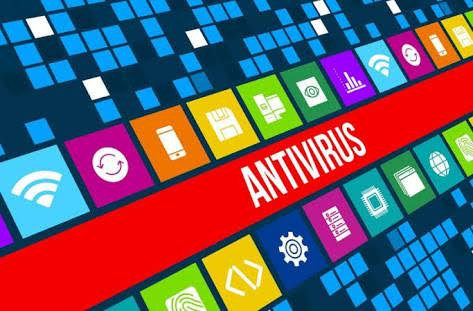

Antivírus é um software que detecta, impede e atua na remoção de programas de software maliciosos, como vírus e worms. São programas usados para proteger e prevenir computadores e outros aparelhos de códigos ou vírus, a fim de dar mais segurança ao usuário.
Existem diversas formas de uma máquina contrair vírus. Eles podem aparecer por meio de pendrives, emails, sites de conteúdo erótico ou duvidoso, download de arquivos e programas infectados e por vários outros meios. Esses vírus e códigos maliciosos possuem a finalidade de interferirem no funcionamento do computador ou outro aparelho para registrar, corromper, destruir dados e transferir informações para outras máquinas.
O antivírus, contudo, possui vários métodos de identificação para impedir a entrada de vírus, incluindo atualização automática, escaneamento, quarentena e outros meios. Alguns dos principais métodos podem ser lidos em detalhes abaixo.
Assim que um novo vírus é descoberto, o antivírus desmonta seu código e o separa em grupos de caracteres chamados de string que não são encontrados em outros programas do computador. A partir daí, a string começa a identificar esse vírus, enquanto que o antivírus faz uma varredura pelo sistema para identificá-lo em algum programa. Caso encontrado, o antivírus notifica o usuário e deleta o arquivo automaticamente, enviando para um espaço que pode ser visualizado posteriormente pelo usuário
Trata-se do segundo passo de uma execução quando o usuário solicita o escaneamento da máquina. O antivírus, por meio de um método complexo e muitas vezes sujeito a erros, realiza a varredura de todo o sistema em busca de instruções que não são executáveis nos programas usuais. Muitas vezes pode apresentar erros por necessitar gravar sobre ele mesmo, ou outro arquivo, dentro de um processo de reconfiguração ou atualização.
Trata-se de uma busca que utiliza algoritmos para encontrar os resultados.
Vale ressaltar que, apesar da evolução dos antivírus e de seus vários recursos para combater e impedir a chegada de programas maliciosos em uma máquina, nenhum deles é considerado totalmente seguro. Mantê-lo atualizado é o mínimo necessário para melhorar a sua atuação dentro do sistema.
Este kit reúne os melhores e mais baixados antivírus grátis para Windows Vista, 7 e 8. Com estes aplicativos, você protege o seu computador de vírus, cavalos de troia, phishing e qualquer tipo de malware existente na internet. Os principais antivírus gratuitos do mercado estão aqui, como o Avast, que é um dos mais procurados por ser gratuito e eficiente, Clique aqui Para fazer um download.
Também está disponível para download o AVG Antivirus, que fornece proteção básica contra vírus, malwares e outras ameaças ao PC. Oferecemos, ainda, o antivírus Microsoft Security Essentials. Ele, além de proteger contra ameaças virtuais, monitora em tempo real e é uma poderosa ferramenta de scan.
Segue abaixo as principais diferenças entre antivírus pagos e gratuitos:
| Funcionalidades | Antivírus Gratuitos | Antivírus Pagos |
|---|---|---|
| Antivírus | Sim | Sim |
| Link Protection | Sim | Sim |
| Email Protection | Sim | Sim |
| Online Shield | Não | Sim |
| Data Safe | Não | Sim |
| Frequent Auto-Update | Não | Sim |
| Anti-Spam | Não | Sim |
| Shopping Protection | Não | Sim |